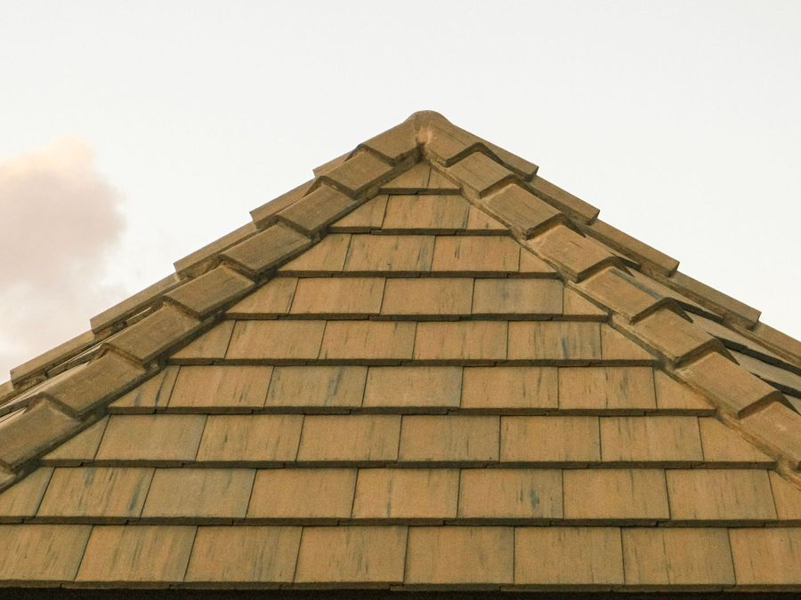
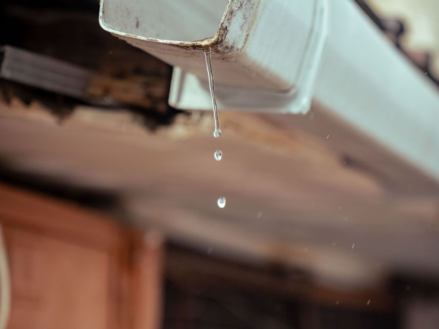
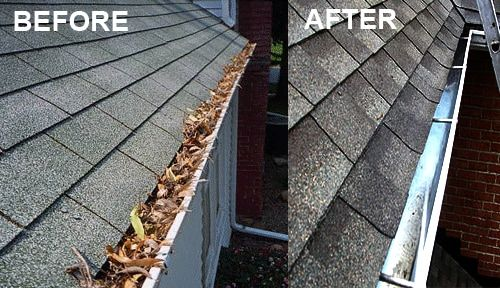
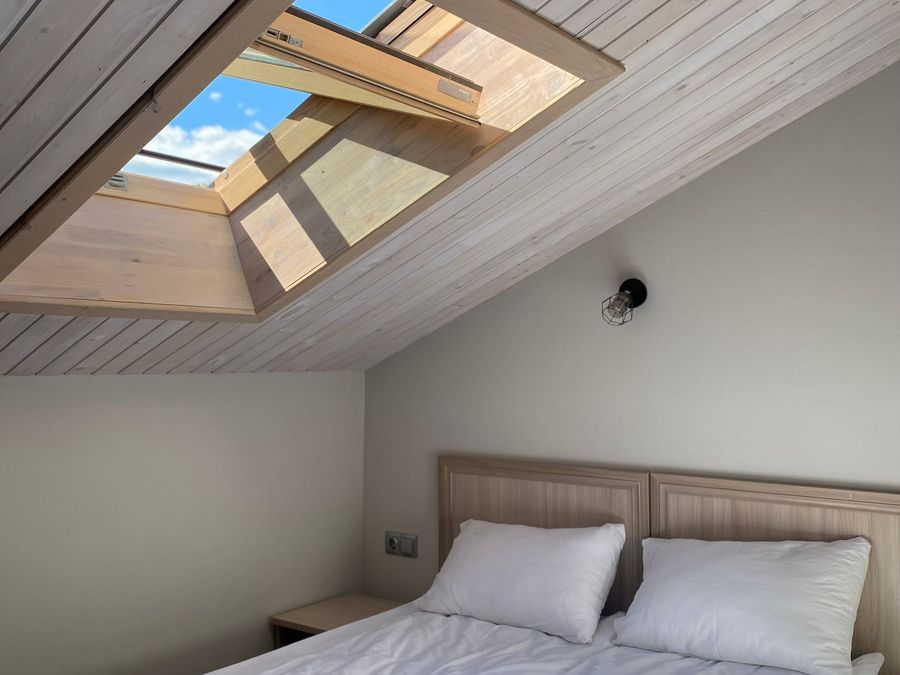
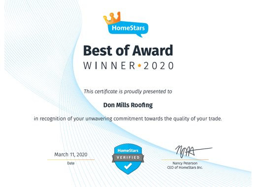

Shingle roof replacement
Full re-roofing with IKO shingles, done on schedule, with a thorough clean-up when the job is finished.
Don Mills Roofing Ltd.
Residential shingle roofing, eavestroughs and skylights across North York and Toronto, family-run since 1994.
What we do
Don Mills Roofing has installed and repaired thousands of roofs in the Greater Toronto Area. Experience truly makes the difference.
Full re-roofing with IKO shingles, done on schedule, with a thorough clean-up when the job is finished.

Wind damage, missing shingles, leaks and flashing. If an expert repair keeps you safe and dry for another five years, we'll tell you honestly.

Kaycan 5" or 6" seamless eavestrough and downpipe, plus soffit and fascia. Includes removal and disposal of the old system.

We recommend cleaning twice a year, in late spring and late fall, to ward off ice dams, overflow and foundation damage.

Let the natural light in. We'll prepare a quote and show you how affordable a new or replacement skylight can be.
Disconnection from the sewer, capping the pipe, and re-sloping eavestroughs to new downspout locations, in line with Toronto's Sewers Bylaw.
We also repair animal damage to roofs.
Repair or replace?
Does your shingled roof need to be replaced or repaired? We can answer that quickly and honestly. If it's time to replace, we'll explain why it's more cost-effective in the long run. If an expert repair can keep you safe and dry for another five years, we'll always walk you through the options.
IKO shingles are warranted for the life of your roof. Combined with our own ten-year warranty on workmanship, you can relax.
Most experts agree a typical asphalt shingle roof lasts 20 to 25 years, depending on layers and ventilation. If it was installed over another layer and is older than 20 years, chances are you need a new roof.
Check the slopes that get direct sun. Curling shingles that are losing granules may be past their life expectancy, or possibly defective.
Snow and rain flow through valleys into the gutters. Shingles falling apart or missing here are a definite sign you need a new roof.
Check that all of the shingle tabs are intact. Missing tabs are another sign the roof could be failing.
Flashing made of roof cement or tar may need replacing with a long-term, water-tight metal flashing system.
Roofs lose more granules toward the end of their life. Inconsistent or darker colour on parts of the roof is another sign.
A spongy feel underfoot means the decking is weakened by moisture. Check the attic for daylight through the boards and moisture in the insulation.
About us
Don Mills Roofing Ltd. was established in 1994 and specializes in residential shingled roof repairs and replacement. Founder and owner John Landry is a third-generation roofer with over 35 years of experience, and he instills that knowledge in the entire crew.
We see roofing as a service industry. Many of our clients have been with us the entire time we've been in business, and our name and reputation are on the line every time we work for you.
Service area: Don Mills, North York, Scarborough, East York and Toronto.
Reviews
A HomeStars Best of Award winner in 2017 and 2020, and 5.0 stars on Google.

Great roofers. Very reasonable priced and the work is top notch. Very friendly crew and John the owner is on the job, ensuring quality work. Highly recommend!
The roof is a few years old and they did a good job then. We had some strong wind and they came quickly to repair the 2 shingles that the wind took off.
He was at my house in less than an hour and had the roof repaired in under three. … When I asked him if my entire roof needed replacing, he told me it wouldn't need it for a couple more years.
The team arrived early in the morning on a Monday and were finished the roofing job by the end of the day. … When the work was done, you couldn't tell anyone had been working around the property…
The quote was reasonable. They came exactly when promised. The crew were courteous and competent. The clean up was exceptional.
His quote was the best of the 6 I had received for the same job of roof replacement. … Everything cleaned up, no nails, no scrap shingles in the flowerbed.
Free estimates
Call during business hours or send the form any time. We check and respond to form submissions every day, Monday through Friday.
We're always looking for hard-working, responsible people with a quality-minded work ethic to join our team. Complete the short form below to ask about job opportunities.